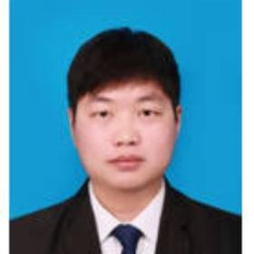

Chenhui Guo
Postdocs · Nanjing Normal University
Email:
chenhuiguo86@gmail.com
c.guo@njnu.edu.cn
chenhuiguo86@gmail.com
c.guo@njnu.edu.cn
Enrollment Year:
2025
2025
Research Interests:
• Chlorophyll Fluorescence
• Ecosystem Carbon and Water Cycles
• Chlorophyll Fluorescence
• Ecosystem Carbon and Water Cycles
Education Background & Research Experience:
• 2025–Present: Postdoc, Nanjing Normal University, China
• 2021.09–2025.06: Ph.D. in Land Resource and Spatial Information Technology, Northwest A&F University, China
• 2019.09–2021.06: Ph.D. Candidate (Master-to-Ph.D. Program), Northwest A&F University, China
• 2014.09–2018.06: B.A. in Human Geography and Urban-Rural Planning, Henan Agricultural University, China
• 2025–Present: Postdoc, Nanjing Normal University, China
• 2021.09–2025.06: Ph.D. in Land Resource and Spatial Information Technology, Northwest A&F University, China
• 2019.09–2021.06: Ph.D. Candidate (Master-to-Ph.D. Program), Northwest A&F University, China
• 2014.09–2018.06: B.A. in Human Geography and Urban-Rural Planning, Henan Agricultural University, China
Honors and Awards:
• National Scholarship for Graduate Students
• National Scholarship for Graduate Students
Publications:
- Guo, C., Liu, Z. and Lu, X. (2025). Application of Simultaneous Active and Passive Fluorescence Observations: Extending a Fluorescence-Based $qL$ Estimation Model. *Sensors*, 25.
- Guo, C., Li, L., Liu, Z., Li, Y. and Lu, X. (2024). A practical approach for extracting the photosystem II (PSII) contribution to near-infrared solar-induced chlorophyll fluorescence. *Science of The Total Environment*, 950, 175203.
- Guo, C., Liu, Z., Jin, X. and Lu, X. (2024). Improved estimation of gross primary productivity (GPP) using solar-induced chlorophyll fluorescence (SIF) from photosystem II. *Agricultural and Forest Meteorology*.
- Liu, Z.#, **Guo, C.#**, Yu, Q., Zhu, P., Peng, X., Dong, M., Cai, H. and Lu, X. (2024). A SIF-based approach for quantifying canopy photosynthesis by simulating the fraction of open PSII reaction centers ($qL$). *Remote Sensing of Environment*, 305, 114111. (Note: # indicates co-first authorship.)